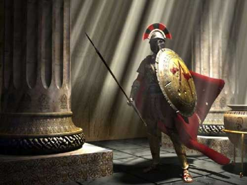
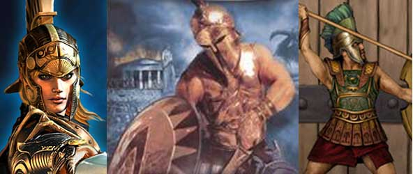
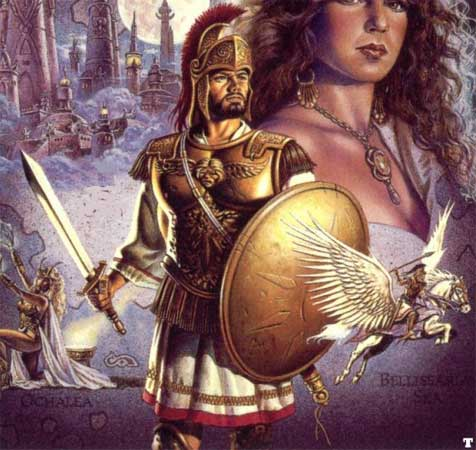

|
PUNTEGGI MINIMI E MASSIMI RAZZIALI PER LE ABILITÀ |
||
| ABILITÀ | MINIMO | MASSIMO |
| Forza | 3 | 18 |
| Intelligenza | 5 | 18 |
| Saggezza | 5 | 18 |
| Costituzione | 3 | 18 |
| Carisma | 6 | 18 |
| Destrezza | 4 | 18 |
|
ABILITÀ DEI LADRI |
PUNTEGGIO INIZIALE |
| Pick Pocket | 15 % |
| Open Lock | 10 % |
| Find/Rem. Trap | 7 % |
| Move Silently | 10 % |
| Hide in Shadows | 5 % |
| Detect Noise | 17 % |
| Climb Wall | 60 % |
| Read Languages | 0 % |
| FATTORE MOVIMENTO BASE | 8 esagoni |
| SENTIRE RUMORI | 17 % |
|
DIMENSIONI E PESO |
SISTEMA DI CALCOLO DELL'ALTEZZA E DEL PESO |
| Altezza del maschio | 130 cm. + 3 cm. per punto di costituzione + 2d10 cm. |
| Altezza della femmina | 115 cm. + 3 cm. per punto di costituzione + 2d10 cm. |
| Peso del maschio | 56 kg. + 2 kg. per punto di costituzione + 1d6 kg. |
| Peso della femmina | 46 kg. + 2 kg. per punto di costituzione + 1d6 kg. |
|
CATEGORIA DI ETÀ |
ANNI |
| Starting Age | 16 + 1d4 |
| Childhood | 0 - 16 |
| Adolescence | 17 - 30 |
| Adulthood | 31 - 49 |
| Middle Age* | 50 - 64 |
| Old Age** | 65 - 94 |
| Venerable Age*** | 95 + |
| Maximum Age | 95 + 2d20 |
* Middle Age: I
personaggi di questa categoria di età perdono 1 punto di forza ed 1 punto di
costituzione, acquisiscono però 1 punto di intelligenza ed 1 punto di saggezza
(non potendo, in ogni caso, superare i massimi razziali).
** Old Age: I personaggi di questa categoria di età perdono 2 punti di
destrezza, 2 ulteriori punti di forza ed 1 ulteriore punto di costituzione,
acquisiscono però 1 ulteriore punto di saggezza (non potendo, in ogni caso,
superare i massimi razziali).
*** Venerable Age: I personaggi di questa categoria di età perdono 1
ulteriore punto di destrezza, di forza e di costituzione, acquisiscono però 1
ulteriore punto di intelligenza e di saggezza (non potendo, in ogni caso,
superare i massimi razziali).


| NOME | Propensione al Commercio |
| COSTO IN PUNTI CREAZIONE | 1 |
| REQUISITO PARTICOLARE | PUNTEGGIO IN CARISMA ALMENO PARI A 11 |
| DESCRIZIONE |
I Silveriani hanno una
lunghissima tradizione commerciale e sono molto abili nel
mercanteggiare. Costoro ricevono i seguenti benefici: |
| NOME | Capacità Istituzionali |
| COSTO IN PUNTI CREAZIONE | 1 |
| REQUISITO PARTICOLARE | NESSUNO |
| DESCRIZIONE |
I Silveriani hanno
grande fiducia nelle istituzioni e nella burocrazia. Inoltre i
Silveriani sono particolarmente portati per la gestione e per
l'amministrazione. Costoro ricevono i seguenti benefici: |
| NOME | Propensione alla Diplomazia |
| COSTO IN PUNTI CREAZIONE | 1 |
| REQUISITO PARTICOLARE | PUNTEGGIO IN CARISMA ALMENO PARI A 11 |
| DESCRIZIONE |
I Silveriani sono la
razza umana maggiormente portata per la diplomazia ed hanno grandi
capacità oratorie e di convincimento. Costoro ricevono i seguenti
benefici: |
| NOME | Tradizione nell'Uso della Daga |
| COSTO IN PUNTI CREAZIONE | 2 |
| REQUISITO PARTICOLARE | NESSUNO |
| DESCRIZIONE |
Le armi favorite dai
Silveriani solo le spade della tipologia classica per le quali viene
tramandata una lunga tradizione. Per tale motivo
coloro che
possiedono questo talento razziale ottengono il seguente beneficio: |
| NOME | Eccellenza Artistica |
| COSTO IN PUNTI CREAZIONE | 2 (3 se della classe Cantori di Arelia) |
| REQUISITO PARTICOLARE | NESSUNO |
| DESCRIZIONE |
I Silveriani sono un
popolo particolarmente portato allo studio delle arti e spesso si
dimostrano i migliori artisti della razza umana. Costoro ricevono i
seguenti benefici: |
| NOME | Maestri della Tecnica Difensiva |
| COSTO IN PUNTI CREAZIONE | 3 |
| REQUISITO PARTICOLARE | NESSUNO |
| DESCRIZIONE |
I Silveriani sono un
popolo particolarmente portato a combattere sulla difensiva. Trovandosi
spesso a dover combattere in inferiorità numerica, vivendo circondati da
popolazioni ostili e dalla cultura assolutamente diversa, costoro hanno
fatto di necessità virtù affinando le proprie tecniche difensive e
forgiando una armatura fatta a segmenti metallici (lorica).
Costoro ricevono i seguenti benefici: |
| NOME | Capacità Divinatorie |
| COSTO IN PUNTI CREAZIONE | 3 |
| REQUISITO PARTICOLARE | PUNTEGGIO IN INTELLIGENZA ALMENO PARI A 10 |
| DESCRIZIONE |
I Silveriani hanno una
lunga tradizione divinatoria. Costoro hanno sempre utilizzato oracoli e
metodologie per prevedere il futuro. Può, quindi, affermarsi che i
Silveriani rappresentano la razza umana maggiormente portata alla
divinazione. Alcuni di loro ricevono, pertanto, i seguenti benefici: |